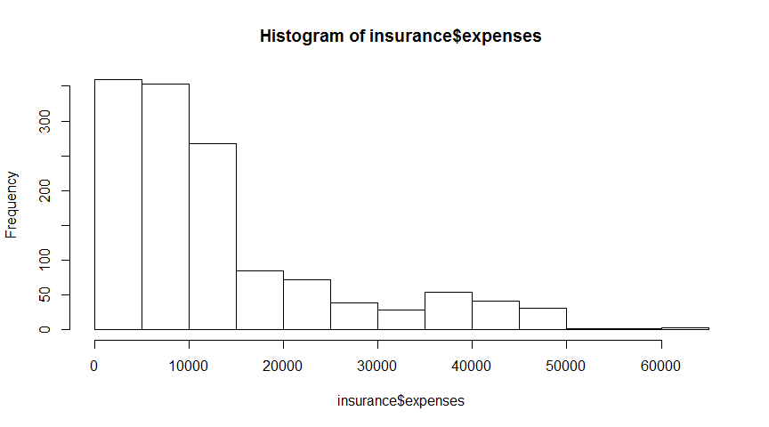
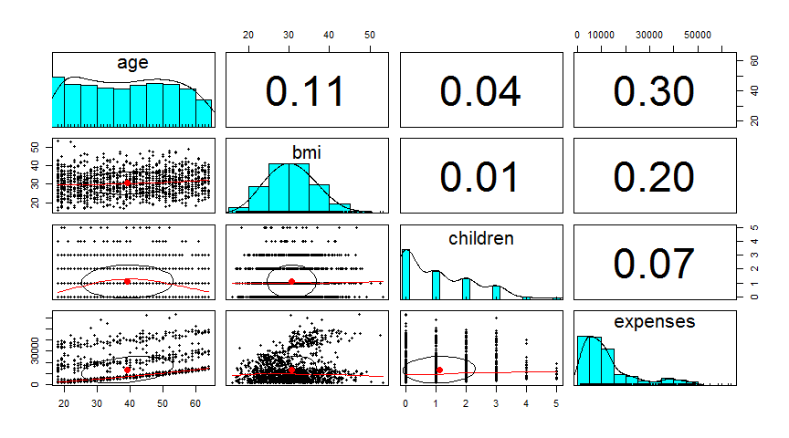
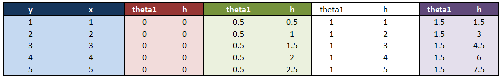
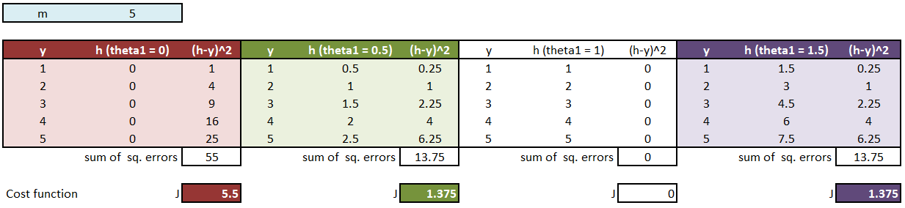
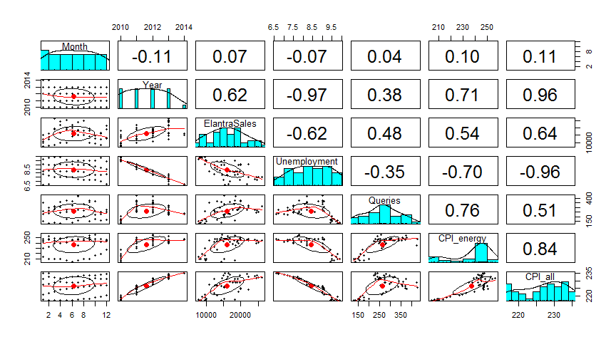
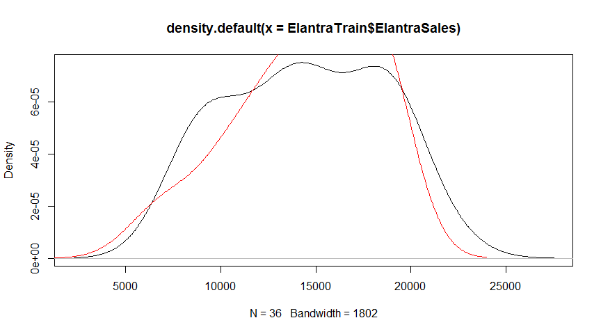
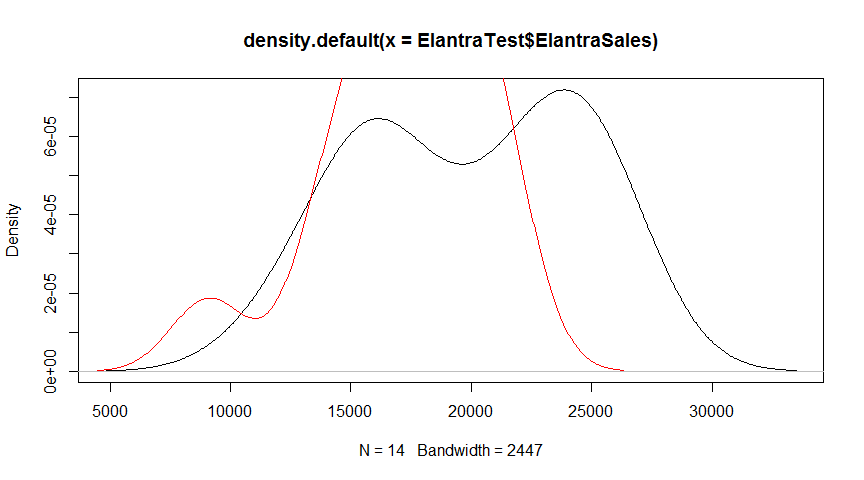

Linear Regression in R
Jose Parreno Garcia
November 2017
- 1 Understanding regression
- 2 Example - predicting medical expenses using linear regression
- 3 Machine Learning Theory
- 4 Example using a proper modelling approach - Hyundai Elantra Car Sales
Mathematical relationships help us to understand many aspects of everyday life. For example, body weight is a function of one’s calorie intake, income is often related to education and job experience, and poll numbers help us estimate a presidential candidate’s odds of being re-elected.
When such relationships are expressed with exact numbers, we gain additional clarity. For example, an additional 250 kilocalories consumed daily may result in nearly a kilogram of weight gain per month; each year of job experience may be worth an additional $1,000 in yearly salary; and a president is more likely to be re-elected when the economy is strong.
In this page we will work with a set of example to go from the very basic understanding of linear regression up to creating models with interactions.
# ----------------------------------------------------------------------
# Loading libraries
# ----------------------------------------------------------------------
library(MASS)
library(plotly)
library(ggplot2)
library(data.table)
library(Metrics)
# Other
library(knitr)
library(psych)1 Understanding regression
Regression is concerned with specifying the relationship between a single numeric dependent variable (the value to be predicted) and one or more numeric independent variables (the predictors). As the name implies, the dependent variable depends upon the value of the independent variable or variables.
Let’s start by thinking about a graph with a straight line. From our high school algebra we recall that lines can be defined by a formula like \(y = a + bx\), being \(y\) the dependant variable, \(a\) the intercept, \(b\) the coefficient that determines how much will \(y\) change with a change of \(x\), and obviously \(x\) being the independent variable.
Imagine we have the dataset shown below. In reality, we could fit infinite straight lines in the 2-D space that we have, but only 1 of them would give the best fit (we will define best fit in a later section). Given that this problem is an easy one, we could try to calculate that line by hand using various derived formulas with easy application, but we want to check how a machine and R can help us solving this problem. In other word, the machine’s job is to identify values of \(a\) and \(b\) so that the specified line is best able to relate the supplied \(x\) values to the values of \(y\).

1.1 Simple linear regression
Linear regression is one of the most (if not the most) basic algorithms used to create predictive models. The basic idea behind linear regression is to be able to fit a straight line through the data that, at the same time, will explain or reflect as accurately as possible the real values for each point.
Let’s look at an example to explain how simple linear regression works. The example will be based on the Boston dataset that comes with the MASS package. Imagine that we want to understand house prices in Boston (medv median house val) from this dataset.
data(Boston)
head(Boston)## crim zn indus chas nox rm age dis rad tax ptratio black lstat medv
## 1 0.00632 18 2.31 0 0.538 6.575 65.2 4.0900 1 296 15.3 396.90 4.98 24.0
## 2 0.02731 0 7.07 0 0.469 6.421 78.9 4.9671 2 242 17.8 396.90 9.14 21.6
## 3 0.02729 0 7.07 0 0.469 7.185 61.1 4.9671 2 242 17.8 392.83 4.03 34.7
## 4 0.03237 0 2.18 0 0.458 6.998 45.8 6.0622 3 222 18.7 394.63 2.94 33.4
## 5 0.06905 0 2.18 0 0.458 7.147 54.2 6.0622 3 222 18.7 396.90 5.33 36.2
## 6 0.02985 0 2.18 0 0.458 6.430 58.7 6.0622 3 222 18.7 394.12 5.21 28.7Starting simple, imagine that we just want to investigate what effects does lstat (percent households with low socioeconomic status) have on medv. Plotting both variables we see that both variables are negatively correlated, which makes perfect sense. Intuitively we would say that the higher the proportion of households with low socioeconomic status, the poorer the area and hence, lower the house prices will be.
Out of all the lines that could cross the data (orange lines), only 1 will be the best fit (green line)
xaxis = list(title = "lstat")
yaxis = list(title = "medv")
# Best line
lm1 = lm(medv ~ lstat, data = Boston)
best_line = as.formula(paste0("medv ~ ", round(coefficients(lm1)[1],2), " + ",
paste(sprintf("%.2f * %s",
coefficients(lm1)[-1],
names(coefficients(lm1)[-1])),
collapse=" + ")
)
)
# Other line 1
line1 = function(x){40 - 0.5*x}
y1 = line1(Boston$lstat)
# Other line 2
line2 = function(x){30 - 0.8*x}
y2 = line2(Boston$lstat)
p = Boston %>%
plot_ly(x = ~ lstat) %>%
add_markers(y = ~ medv, name = 'medv vs lstat') %>%
add_lines(x = ~ lstat, y = fitted(lm1), name = 'Best fit', line = list(color = 'green')) %>% # best line
add_lines(x = ~ lstat, y = y1, name = 'Line1', line = list(color = 'orange')) %>% # line1
add_lines(x = ~ lstat, y = y2, name = 'Line2', line = list(color = 'orange')) %>% # line2
layout(title = 'lstat vs medv',
xaxis = xaxis,
yaxis = yaxis)
p1.1.1 Line of best fit
So, the question is, how does the machine know (or how would we know if we calculated it) that the green line is the line of best fit?
In order to determine the optimal estimates of \(a\) and \(b\), an estimation method known as Ordinary Least Squares (OLS) was used. In OLS regression, the slope and intercept are chosen so that they minimize the sum of the squared errors, that is, the vertical distance between the predicted y value and the actual y value. These errors are known as residuals. In mathematical terms, the goal is to minimize the sum of squared errors, in other words \(min \sum {e_i}^2 = \sum {(y_i - \widehat{y_i})}^2\).
To understand this more clearly, check the following image.
Let’s check the errors made by the 3 lines plotted above, and check if the green line is really the best out of the 3 based on the OLS method and the residuals.
# Best line
lm1 = lm(medv ~ lstat, data = Boston)
# Other line 1
line1 = function(x){40 - 0.5*x}
y1 = line1(Boston$lstat)
# Other line 2
line2 = function(x){30 - 0.8*x}
y2 = line2(Boston$lstat)
# Creating dataframe to show errors
df = Boston[, c('lstat','medv')]
df$medv_best_line = round(predict(lm1, df),1)
df$medv_line1 = round(line1(df$lstat),1)
df$medv_line2 = round(line2(df$lstat),1)
df$error_best_line = (df$medv - df$medv_best_line)^2
df$error_line1 = (df$medv - df$medv_line1)^2
df$error_line2 = (df$medv - df$medv_line2)^2
# Show
head(df)## lstat medv medv_best_line medv_line1 medv_line2 error_best_line error_line1 error_line2
## 1 4.98 24.0 29.8 37.5 26.0 33.64 182.25 4.00
## 2 9.14 21.6 25.9 35.4 22.7 18.49 190.44 1.21
## 3 4.03 34.7 30.7 38.0 26.8 16.00 10.89 62.41
## 4 2.94 33.4 31.8 38.5 27.6 2.56 26.01 33.64
## 5 5.33 36.2 29.5 37.3 25.7 44.89 1.21 110.25
## 6 5.21 28.7 29.6 37.4 25.8 0.81 75.69 8.41# Print sum of errors
print(paste('Sum of errors best line',sum(df$error_best_line)))## [1] "Sum of errors best line 19457.41"print('')## [1] ""print(paste('Sum of errors line 1',sum(df$error_line1)))## [1] "Sum of errors line 1 87496.23"print('')## [1] ""print(paste('Sum of errors line 2',sum(df$error_line2)))## [1] "Sum of errors line 2 23618.84"1.1.2 Correlations
We now know that, for a linear regression, there is only 1 possible line of best fit which is built minimizing the errors made using the Ordinary Least Squares method. However, having this line of best fit does not inform us of how strong is the relationship between 2 variables.
To understand this we use correlation, which indicates how closely their relationship follows a straight line. Correlation typically refers to the Pearson coefficient, which ranges from -1 to +1, being -1 a perfectly negative relationship, +1 perfectly positive relationship and 0 being no relationship. For mathematical completion, the formula de calculate the Pearson coefficient is:
\[ \rho_{x,y} = Corr(x,y) = \frac{Cov(x,y)}{\sigma_{x}\sigma_{y}} \] Let’s understand the correlation values with a couple of examples:
# You can print all possible correlations of all variables using the cor function, but let's investigate only 4 of them:
round(cor(Boston[,c('medv','lstat','nox','zn')]),3)## medv lstat nox zn
## medv 1.000 -0.738 -0.427 0.360
## lstat -0.738 1.000 0.591 -0.413
## nox -0.427 0.591 1.000 -0.517
## zn 0.360 -0.413 -0.517 1.000- You can see there the diagonal of the matrix is all 1s. This is because a variable against itself is always going to have a perfectly correlation.
- If you check the line of best fit between medv and lstat, we have a slight downwards slope. This behaviour is indicated by a strong negative correlation between both variables. This can be interpreted as, the more percent of households with lower status, the lower the median house value.
- On the other hand, we can see a weaker but positive relation between medv and zn (average number of rooms). In this case, even though the relationship is weaker, a increase in the number of rooms would lead to a higher price (which is quite logical).
1.1.3 First simple linear model and coefficient interpretation
So, after understanding that we have 1 possible line of best fit, and acknowledging that, unless visual checks, we need correlations to understand how are 2 variables related, we are left with the final question. How does much does an independent variable affect the dependent variable. So far we know that if correlations are negative, an increase of the independent variable will translate in a decrease of the dependent variable. But, having, for example, 2 different correlations, let’s say -0.25 and -0.80, how much do each of these relationships affect the independent variable.
Let’s use the previous variables used in the correlation table to get an initial first interpreation of a simple linear model. We know that lstat and nox had negative correlations, but magnitudes differ (-0.73 and -0.42). We will build 2 simple linear models and check the coefficients that will make the final formula.
# LINEAR MODEL 1 - USING LSTAT
lm1 = lm(medv ~ lstat, data = Boston)
summary(lm1)##
## Call:
## lm(formula = medv ~ lstat, data = Boston)
##
## Residuals:
## Min 1Q Median 3Q Max
## -15.168 -3.990 -1.318 2.034 24.500
##
## Coefficients:
## Estimate Std. Error t value Pr(>|t|)
## (Intercept) 34.55384 0.56263 61.41 <2e-16 ***
## lstat -0.95005 0.03873 -24.53 <2e-16 ***
## ---
## Signif. codes: 0 '***' 0.001 '**' 0.01 '*' 0.05 '.' 0.1 ' ' 1
##
## Residual standard error: 6.216 on 504 degrees of freedom
## Multiple R-squared: 0.5441, Adjusted R-squared: 0.5432
## F-statistic: 601.6 on 1 and 504 DF, p-value: < 2.2e-16best_line = as.formula(paste0("medv ~ ",
round(coefficients(lm1)[1],2), " + ",
paste(sprintf("%.2f * %s",
coefficients(lm1)[-1],
names(coefficients(lm1)[-1])),
collapse=" + ")
)
)
best_line## medv ~ 34.55 + -0.95 * lstatSo, lstat had a negative correlation of -0.73. When we apply the linear model, the line of best fit follows the formula \(medv = 34.55 + -0.95 * lstat\). The reading of this model is that, for an increase of 1 unit in lstat, medv will be decreased by 0.95. There is a lot more information in the summary of the model, but let’s leave it here and check what happens with nox.
# LINEAR MODEL 2 - USING NOX
lm1 = lm(medv ~ nox, data = Boston)
summary(lm1)##
## Call:
## lm(formula = medv ~ nox, data = Boston)
##
## Residuals:
## Min 1Q Median 3Q Max
## -13.691 -5.121 -2.161 2.959 31.310
##
## Coefficients:
## Estimate Std. Error t value Pr(>|t|)
## (Intercept) 41.346 1.811 22.83 <2e-16 ***
## nox -33.916 3.196 -10.61 <2e-16 ***
## ---
## Signif. codes: 0 '***' 0.001 '**' 0.01 '*' 0.05 '.' 0.1 ' ' 1
##
## Residual standard error: 8.323 on 504 degrees of freedom
## Multiple R-squared: 0.1826, Adjusted R-squared: 0.181
## F-statistic: 112.6 on 1 and 504 DF, p-value: < 2.2e-16best_line = as.formula(paste0("medv ~ ",
round(coefficients(lm1)[1],2), " + ",
paste(sprintf("%.2f * %s",
coefficients(lm1)[-1],
names(coefficients(lm1)[-1])),
collapse=" + ")
)
)
best_line## medv ~ 41.35 + -33.92 * noxIn this case, being the relationship between nox and med weaker than the one between lstat and medv, the magnitude of how medv is affected is much larger.
To understand this, let’s quickly plot both relationships. From the graphs below, you can see that nox has a much different range of values than lstat!!
# LSTAT
lm1 = lm(medv ~ lstat, data = Boston)
p1 = Boston %>%
plot_ly(x = ~ lstat) %>%
add_markers(y = ~ medv, name = 'medv vs lstat') %>%
add_lines(x = ~ lstat, y = fitted(lm1), name = 'Best fit', line = list(color = 'green')) %>% # best line
layout(title = 'lstat vs medv',
xaxis = list(title = "lstat"),
yaxis = list(title = "medv"))
# NOX
lm2 = lm(medv ~ nox, data = Boston)
p2 = Boston %>%
plot_ly(x = ~ nox) %>%
add_markers(y = ~ medv, name = 'medv vs nox') %>%
add_lines(x = ~ nox, y = fitted(lm2), name = 'Best fit', line = list(color = 'green')) %>% # best line
layout(title = 'nox vs medv',
xaxis = list(title = "nox"),
yaxis = list(title = "medv"))
p1p2Therefore, even though the magnitudes are correct in the sense that comparing whole unit changes, nox would have a bigger impact than lstat, if we want to compare which of both actually has bigger influence, the best way to do this is by aligning the variable ranges. This can be done in a number of ways, for example, ensuring the range of the variables is always between 0 and 1. I am not going to cover the whole rescaling and interpretation of the models (you can do this yourself :)), but we have covered enough material to really understand the basics of Simple Linear Regression.
Our next step is to complicate things a little bit by creating models with model than one indepedent variable. These models are calling Multiple Linear Regression models.
1.2 Multiple linear regression
Most real-world analyses have more than one independent variable. Therefore, it is likely that you will be using multiple linear regression for most numeric prediction tasks. We can understand multiple regression as an extension of simple linear regression. The goal in both cases is similar-find values of beta coefficients that minimize the prediction error of a linear equation. The key difference is that there are additional terms for additional independent variables. Multiple regression equations generally follow the form of the following equation. The dependent variable y is specified as the sum of an intercept term \(\alpha\) plus the product of the estimated \(\beta\) value and the \(x\) values for each of the \(i\) features. An error term (denoted by the Greek letter epsilon) has been added here as a reminder that the predictions are not perfect. This represents the residual term.
\[ y = \alpha + \beta_1 x_1 + \beta_2 x_2 + ... + \beta_i x_i + \varepsilon\]
2 Example - predicting medical expenses using linear regression
In order for a health insurance company to make money, it needs to collect more in yearly premiums than it spends on medical care to its beneficiaries. As a result, insurers invest a great deal of time and money in developing models that accurately forecast medical expenses for the insured population.
insurance = fread(paste0(source_path,"/insurance.txt"), sep = ",")
insurance = as.data.frame(insurance)
names(insurance)[names(insurance) == 'charges'] = 'expenses'
head(insurance)## age sex bmi children smoker region expenses
## 1 19 female 27.900 0 yes southwest 16884.924
## 2 18 male 33.770 1 no southeast 1725.552
## 3 28 male 33.000 3 no southeast 4449.462
## 4 33 male 22.705 0 no northwest 21984.471
## 5 32 male 28.880 0 no northwest 3866.855
## 6 31 female 25.740 0 no southeast 3756.622The insurance.csv file includes 1,338 examples of beneficiaries currently enrolled in the insurance plan, with features indicating characteristics of the patient as well as the total medical expenses charged to the plan for the calendar year. The features are:
- age: An integer indicating the age of the primary beneficiary (excluding those above 64 years, since they are generally covered by the government).
- sex: The policy holder’s gender, either male or female.
- bmi: The body mass index (BMI), which provides a sense of how over- or under-weight a person is relative to their height. BMI is equal to weight (in kilograms) divided by height (in meters) squared. An ideal BMI is within the range of 18.5 to 24.9.
- children: An integer indicating the number of children/dependents covered by the insurance plan.
- smoker: A yes or no categorical variable that indicates whether the insured regularly smokes tobacco.
- region: The beneficiary’s place of residence in the US, divided into four geographic regions: northeast, southeast, southwest, or northwest.
Our model’s dependent variable is expenses, which measures the medical costs each person charged to the insurance plan for the year. Prior to building a regression model, it is often helpful to check for normality. Although linear regression does not strictly require a normally distributed dependent variable, the model often fits better when this is true. Let’s take a look at the summary statistics.
summary(insurance$expenses)## Min. 1st Qu. Median Mean 3rd Qu. Max.
## 1122 4740 9382 13270 16640 63770hist(insurance$expenses)
As expected, the figure shows a right-skewed distribution. It also shows that the majority of people in our data have yearly medical expenses between zero and $15,000, in spite of the fact that the tail of the distribution extends far past these peaks. Although this distribution is not ideal for a linear regression, knowing this weakness ahead of time may help us design a better-fitting model later on.
Before we address that issue, another problem is at hand. Regression models require that every feature is numeric, yet we have three factor-type features in our data frame. For instance, the sex variable is divided into male and female levels, while smoker is divided into yes and no. From the summary() output, we know that the region variable has four levels.
2.1 Exploring relationships among features - the correlation matrix
Before fitting a regression model to data, it can be useful to determine how the independent variables are related to the dependent variable and each other. A correlation matrix provides a quick overview of these relationships. Given a set of variables, it provides a correlation for each pairwise relationship. To create a correlation matrix for the four numeric variables in the insurance data frame, use the cor() command:
cor(insurance[c("age", "bmi", "children", "expenses")])## age bmi children expenses
## age 1.0000000 0.1092719 0.04246900 0.29900819
## bmi 0.1092719 1.0000000 0.01275890 0.19834097
## children 0.0424690 0.0127589 1.00000000 0.06799823
## expenses 0.2990082 0.1983410 0.06799823 1.00000000At the intersection of each row and column pair, the correlation is listed for the variables indicated by that row and column. The diagonal is always 1 since there is always a perfect correlation between a variable and itself. The values above and below the diagonal are identical since correlations are symmetrical. In other words, cor(x, y) is equal to cor(y, x). None of the correlations in the matrix are considered strong, but there are some notable associations. For instance, age and bmi appear to have a weak positive correlation, meaning that as someone ages, their body mass tends to increase. There is also a moderate positive correlation between age and expenses, bmi and expenses, and children and expenses. These associations imply that as age, body mass, and number of children increase, the expected cost of insurance goes up.
2.2 Visualizing relationships among features - the scatterplot matrix
It can also be helpful to visualize the relationships among numeric features by using a scatterplot. Although we could create a scatterplot for each possible relationship, doing so for a large number of features might become tedious. An alternative is to create a scatterplot matrix (sometimes abbreviated as SPLOM), which is simply a collection of scatterplots arranged in a grid. It is used to detect patterns among three or more variables. The scatterplot matrix is not a true multidimensional visualization because only two features are examined at a time. Still, it provides a general sense of how the data may be interrelated.
pairs.panels(insurance[c("age", "bmi", "children", "expenses")])
In the scatterplot matrix, the intersection of each row and column holds the scatterplot of the variables indicated by the row and column pair. The diagrams above and below the diagonal are transpositions since the x axis and y axis have been swapped. Do you notice any patterns in these plots? Although some look like random clouds of points, a few seem to display some trends. The relationship between age and expenses displays several relatively straight lines, while the bmi versus expenses plot has two distinct groups of points. It is difficult to detect trends in any of the other plots.
Above the diagonal, the scatterplots have been replaced with a correlation matrix. On the diagonal, a histogram depicting the distribution of values for each feature is shown. Finally, the scatterplots below the diagonal are now presented with additional visual information.
The oval-shaped object on each scatterplot is a correlation ellipse. It provides a visualization of correlation strength. The dot at the center of the ellipse indicates the point at the mean values for the x and y axis variables. The correlation between the two variables is indicated by the shape of the ellipse; the more it is stretched, the stronger the correlation. An almost perfectly round oval, as with bmi and children, indicates a very weak correlation (in this case, it is 0.01).
The curve drawn on the scatterplot is called a loess curve. It indicates the general relationship between the x and y axis variables. It is best understood by example. The curve for age and children is an upside-down U, peaking around middle age. This means that the oldest and youngest people in the sample have fewer children on the insurance plan than those around middle age. Because this trend is non-linear, this finding could not have been inferred from the correlations alone. On the other hand, the loess curve for age and bmi is a line sloping gradually up, implying that body mass increases with age, but we had already inferred this from the correlation matrix.
2.3 Training a model on the data
The following command fits a linear regression model relating the six independent variables to the total medical expenses.
ins_model = lm(expenses ~ ., data = insurance)
summary(ins_model)##
## Call:
## lm(formula = expenses ~ ., data = insurance)
##
## Residuals:
## Min 1Q Median 3Q Max
## -11304.9 -2848.1 -982.1 1393.9 29992.8
##
## Coefficients:
## Estimate Std. Error t value Pr(>|t|)
## (Intercept) -11938.5 987.8 -12.086 < 2e-16 ***
## age 256.9 11.9 21.587 < 2e-16 ***
## sexmale -131.3 332.9 -0.394 0.693348
## bmi 339.2 28.6 11.860 < 2e-16 ***
## children 475.5 137.8 3.451 0.000577 ***
## smokeryes 23848.5 413.1 57.723 < 2e-16 ***
## regionnorthwest -353.0 476.3 -0.741 0.458769
## regionsoutheast -1035.0 478.7 -2.162 0.030782 *
## regionsouthwest -960.0 477.9 -2.009 0.044765 *
## ---
## Signif. codes: 0 '***' 0.001 '**' 0.01 '*' 0.05 '.' 0.1 ' ' 1
##
## Residual standard error: 6062 on 1329 degrees of freedom
## Multiple R-squared: 0.7509, Adjusted R-squared: 0.7494
## F-statistic: 500.8 on 8 and 1329 DF, p-value: < 2.2e-16Understanding the regression coefficients is fairly straightforward. The intercept is the predicted value of expenses when the independent variables are equal to zero. As is the case here, quite often the intercept is of little value alone because it is impossible to have values of zero for all features. For example, since no person exists with age zero and BMI zero, the intercept has no real-world interpretation. For this reason, in practice, the intercept is often ignored.
The coefficients indicate the estimated increase in expenses for an increase of one in each of the features, assuming all other values are held constant. For instance, for each additional year of age, we would expect 256.90 higher medical expenses on average, assuming everything else is equal. Similarly, each additional child results in an average of 475.50 in additional medical expenses each year, and each unit increase in BMI is associated with an average increase of 339.30 in yearly medical expenses, all else equal.
You might notice that although we only specified six features in our model formula, there are eight coefficients reported in addition to the intercept. This happened because the lm() function automatically applied a technique known as dummy coding to each of the factor-type variables we included in the model. Dummy coding allows a nominal feature to be treated as numeric by creating a binary variable, often called a dummy variable, for each category of the feature. The dummy variable is set to 1 if the observation falls into the specified category or 0 otherwise. For instance, the sex feature has two categories: male and female. This will be split into two binary variables, which R names sexmale and sexfemale. For observations where sex = male, then sexmale = 1 and sexfemale = 0; conversely, if sex = female, then sexmale = 0 and sexfemale = 1. The same coding applies to variables with three or more categories. For example, R split the four-category feature region into four dummy variables: regionnorthwest, regionsoutheast, regionsouthwest, and regionnortheast.
When adding a dummy variable to a regression model, one category is always left out to serve as the reference category. The estimates are then interpreted relative to the reference. In our model, R automatically held out the sexfemale, smokerno, and regionnortheast variables, making female non-smokers in the northeast region the reference group. Thus, males have 131.40 less medical expenses each year relative to females and smokers cost an average of 23,847.50 more than non-smokers per year. The coefficient for each of the three regions in the model is negative, which implies that the reference group, the northeast region, tends to have the highest average expenses.
The results of the linear regression model make logical sense: old age, smoking, and obesity tend to be linked to additional health issues, while additional family member dependents may result in an increase in physician visits and preventive care such as vaccinations and yearly physical exams. However, we currently have no sense of how well the model is fitting the data.
2.4 Evaluating model performance
The summary() output may seem confusing at first, but the basics are easy to pick up. As indicated by the numbered labels in the preceding output, the output provides three key ways to evaluate the performance, or fit, of our model:
The residuals section provides summary statistics for the errors in our predictions, some of which are apparently quite substantial. Since a residual is equal to the true value minus the predicted value, the maximum error of 29981.7 suggests that the model under-predicted expenses by nearly 30,000 for at least one observation. On the other hand, 50 percent of errors fall within the 1Q and 3Q values (the first and third quartile), so the majority of predictions were between 2,850.90 over the true value and 1,383.90 under the true value.
For each estimated regression coefficient, the p-value, denoted Pr(>|t|), provides an estimate of the probability that the true coefficient is zero given the value of the estimate. Small p-values suggest that the true coefficient is very unlikely to be zero, which means that the feature is extremely unlikely to have no relationship with the dependent variable. Note that some of the p-values have stars (***), which correspond to the footnotes to indicate the significance level met by the estimate. This level is a threshold, chosen prior to building the model, which will be used to indicate “real” findings, as opposed to those due to chance alone; p-values less than the significance level are considered statistically significant. If the model had few such terms, it may be cause for concern, since this would indicate that the features used are not very predictive of the outcome. Here, our model has several highly significant variables, and they seem to be related to the outcome in logical ways.
The multiple R-squared value (also called the coefficient of determination) provides a measure of how well our model as a whole explains the values of the dependent variable. It is similar to the correlation coefficient, in that the closer the value is to 1.0, the better the model perfectly explains the data. Since the R-squared value is 0.7494, we know that the model explains nearly 75 percent of the variation in the dependent variable. Because models with more features always explain more variation, the adjusted R-squared value corrects R-squared by penalizing models with a large number of independent variables. It is useful for comparing the performance of models with different numbers of explanatory variables.
2.5 Improving model performance
A key difference between the regression modeling and other machine learning approaches is that regression typically leaves feature selection and model specification to the user. Consequently, if we have subject matter knowledge about how a feature is related to the outcome, we can use this information to inform the model specification and potentially improve the model’s performance.
2.5.1 Adding non-linear relationships
In linear regression, the relationship between an independent variable and the dependent variable is assumed to be linear, yet this may not necessarily be true. For example, the effect of age on medical expenditure may not be constant throughout all the age values; the treatment may become disproportionately expensive for oldest populations. To account for a non-linear relationship, we can add a higher order term to the regression model, treating the model as a polynomial.
insurance$age2 = insurance$age^22.5.2 Converting a numeric variable to a binary indicator
Suppose we have a hunch that the effect of a feature is not cumulative, rather it has an effect only after a specific threshold has been reached. For instance, BMI may have zero impact on medical expenditures for individuals in the normal weight range, but it may be strongly related to higher costs for the obese (that is, BMI of 30 or above). We can model this relationship by creating a binary obesity indicator variable that is 1 if the BMI is at least 30, and 0 if less. The estimated beta for this binary feature would then indicate the average net impact on medical expenses for individuals with BMI of 30 or above, relative to those with BMI less than 30.
insurance$bmi30 = ifelse(insurance$bmi >= 30, 1, 0)2.5.3 Adding interaction effects
What if certain features have a combined impact on the dependent variable? For instance, smoking and obesity may have harmful effects separately, but it is reasonable to assume that their combined effect may be worse than the sum of each one alone. When two features have a combined effect, this is known as an interaction. To have the obesity indicator (bmi30) and the smoking indicator (smoker) interact, we would write a formula in the form expenses ~ bmi30*smoker:
2.5.4 Putting it all together - an improved regression model
ins_model2 = lm(expenses ~ age + age2 + children + bmi + sex + bmi30*smoker + region, data = insurance)
summary(ins_model2)##
## Call:
## lm(formula = expenses ~ age + age2 + children + bmi + sex + bmi30 *
## smoker + region, data = insurance)
##
## Residuals:
## Min 1Q Median 3Q Max
## -17296.4 -1656.0 -1263.3 -722.1 24160.2
##
## Coefficients:
## Estimate Std. Error t value Pr(>|t|)
## (Intercept) 134.2509 1362.7511 0.099 0.921539
## age -32.6851 59.8242 -0.546 0.584915
## age2 3.7316 0.7463 5.000 6.50e-07 ***
## children 678.5612 105.8831 6.409 2.04e-10 ***
## bmi 120.0196 34.2660 3.503 0.000476 ***
## sexmale -496.8245 244.3659 -2.033 0.042240 *
## bmi30 -1000.1403 422.8402 -2.365 0.018159 *
## smokeryes 13404.6866 439.9491 30.469 < 2e-16 ***
## regionnorthwest -279.2038 349.2746 -0.799 0.424212
## regionsoutheast -828.5467 351.6352 -2.356 0.018604 *
## regionsouthwest -1222.6437 350.5285 -3.488 0.000503 ***
## bmi30:smokeryes 19810.7533 604.6567 32.764 < 2e-16 ***
## ---
## Signif. codes: 0 '***' 0.001 '**' 0.01 '*' 0.05 '.' 0.1 ' ' 1
##
## Residual standard error: 4445 on 1326 degrees of freedom
## Multiple R-squared: 0.8664, Adjusted R-squared: 0.8653
## F-statistic: 781.7 on 11 and 1326 DF, p-value: < 2.2e-16So, how has the new model performed compared to the first one we built?
- Residuals. For the first model the maximum error was 30k, whereas in the second one is 24k. Not the best improvement, but for the extreme cases we have been able to improve large errors. In addition, for the first model, 50% of the cases (cases between Q1 and Q3) fell between -2848.1 and 1393.9, whereas in the second model between -1656.0 and -722.1. Now this is a very good sign that our model is doing better.
- R-squared. The first model had an r-squared of 0.7494, whereas the new model has 0.8653. Again a good indicator of better performance for linear regression.
- Non signficant features. You can observe how in the second model, the newly defined features are all significant. As an example, we previously were checking age linearly and it was a significant variable in the first model. However, by adding a non-linear relationship of age with expenses, we have a better predictive variable which is significant, leaving the linear age-expenses relationship non significant.
3 Machine Learning Theory
Up until now we have understood linear regression on a high level: a little bit of the construction of the formula, how to implement a linear regression model in R, checking initial results from a model and adding extra terms to help with our modelling (non-linear relationships, interaction terms and dummy/flag variables). All of this is important, and the example of medical expenses gives you a good walkthrough to understand all of this.
However, what we haven’t yet done is created a model that can generalise future data. If you check the medical expenses example, we have built our model using the whole dataset, data that we already know the result of, but we haven’t had the chance to check how would it perform on unseen data! And that is our real primary goal, how to create a model that will generalise well and that we trust when using it predict with future input data.
In addition, we havent explored other possible metrics for linear regression. R-squared is a high level metric, but that we need to be careful with (I will show later on why). An interesting feature I always like to check is the root mean squared error. We haven’t either plotted any of our predictions against the actual data, or checked what do the residuals of our model look like.
Finally, linear regression can have other modelling inputs that we haven’t yet introduced (like regularization parameters). We will explore these and see how they are implemented in R.
These following sections are going to be a bit theoretical, with little or no R scripting examples. I believe that understanding the theory first and then showcasing with examples is the best way to understand things. You can always jump directly to the examples at the end if you want to skip the theory.
3.1 Machine Learning Theory - Univariate Linear Regression
Earlier in this post we have seen the basic construction of a linear regression function:
\[ y = \alpha + \beta_1 x_1 + \beta_2 x_2 + ... + \beta_i x_i + \varepsilon\]
We also answered the question of “how do we choose the \(\beta\) coefficients”. We said the approach was to take the OLS approach, which basically minimises the errors between actual and predicted values. This, in essence, is totally correct. However, what we are going to introduce here is the formal explanation of how the algorithm performs these checks.
3.1.1 Hypothesis for univariate linear regression
Hypothesis. The hypothesis formula should seem familiar to you as it represents a linear equation. In this case, our output (our hypothesis) is dependant of the value of x. The theta values are the ones we want to choose to fit the data as perfectly as possible.
\[ h_{\theta(x)} = \theta_0 + \theta_1x \]
Goal. Minimize the squared error difference between our predicted hypothesis and the actual value of y. This total errors can be seen as a cost, eg, the bigger the total errors, the bigger cost you would have, and hence, the idea is to minimize a cost function.
\[ \min_{\theta_0,\theta_1} J(\theta_0,\theta_1) = \min_{\theta_0,\theta_1} \frac{1}{2m} \sum_{i=1}^m \big( h_{\theta} \big(x^{(i)} \big)-y^{(i)} \big)^2 \]
being:
- \(J(\theta_0,\theta_1)\), the cost function
- \(m\), the total number of training examples
- \(x(i)\), i-th training example
- \(y(i)\), i-th actual value
3.1.2 Cost function for univariate linear regression - intuition
Ok, this cost function might seems a bit scary for those of you who do not feel comfortable with maths. I will try to use a numeric example to help you understand this. Let’s simplify the example and eliminate the independent term \(\theta_0\):

The following table shows in initial data (blue colour) and the different hypothesis outputs we get when changing \(\theta_1\):

It is quite obvious that \(\theta_1 = 1\) (white columns) would be the best choice as it fits perfectly the real data! All other possibilities (purple, green, red lines) are different from the real data, and therefore will have an error associated with it. So, how does these different possible \(\theta_1\) values affect the cost function \(J\)?
We calculate the squared difference for each example y and hypothesis h. Then we add all error as the sum of sq. errors, and finally we apply the cost function equation to get \(J\):

3.1.3 Gradient descent algorithm
Ok, we as humans are able to say with a single glance that minimum point for the cost function would correspond to a combination of \(\theta_0 = 0\), \(\theta_1 = 1\). But, how does the machine get to this point? What steps does it have to follow in order to choose from infinite combinations, which is the best pair, the one that minimizes the cost function? To do this, we introduce Gradient Descent. Gradient descent is an iteration process that updates the values of the \(\theta\) parameters until we reach convergence, in other words, it is a process that keeps updating \(\theta\) until there is no difference in the last repetition (because we have reached the minimum and there is no better solution to update with a different value).

Again, this formulation might be a bit overwhelming for those not comfortable with maths, especially as we introduce partial derivatives. In addition, we have introduced a new parameter ?? that we haven’t yet defined. So, let’s try to explain how gradient descent works with a graphic example.
- Partial derivatives. It graphically represents the slope of the curve on a certain point. The important information we need from the slope is if it’s positive or negative. In this case, we have a positive slope, therefore, we have a positive term for the partial derivatives in the equation. Taking into consideration that alpha is positive, then applying gradient descent, the next step will update theta with a smaller value, and therefore, getting closer to the minimum!

- Effect of alpha. Alpha is a positive constant and there are 2 main extreme effects that could jeopardize the implementation of gradient descent:
- Alpha too small: a minimum will be found, but it will take too many operations to find it. Slow but accurate.
- Alpha too big: as alpha is too big, the steps taken might be too big, and therefore, we might be jumping over the minimum without reaching it. Quicker but we might be able to converge.


3.1.4 Gradient descent algorithm for linear regression
So once understood how gradient descent works, let me formulate the equation and apply it for the case of 1 variable using linear regression.

3.2 Machine Learning Theory - Multivariate Linear Regression
Let’s introduce a simple example to show what we mean by having a linear model with multiple independent variables.

We want to predict house prices (variable \(y\)), and we have 3 different features (\(x_1\), \(x_2\), \(x_3\)). How would our hypothesis function look like? And what would be the general formula?
\[ h_\theta(x) = \theta_0 + \theta_1x_1 + \theta_2x_2 + \theta_3x_3 + ... + \theta_1x_1 \]
This formula looks fine on paper, but if you want to implement it in code, the best idea would be to vectorise it (throughout all theory posts, the final goal will be always to vectorise formulas).
\[ X = \begin{bmatrix} x_0 \\ x_1 \\ ... \\ x_n \end{bmatrix}, theta = \begin{bmatrix} \theta_0 \\ \theta_1 \\ ... \\ \theta_n \end{bmatrix} \longrightarrow h_\theta(x) = \theta^T X\]
3.2.1 Gradient descent for multiple features
Recall the formulas used for univariate linear regression:

The only change that will differentiate gradient descent for multiple features will be the generalization of the formula for univariate linear regression gradient descent. In fact, the previous formula will be replace for the generalised one because it covers both the univariate and multivariate situation.


3.2.2 Changes to gradient descent: feature scaling
There are 2 main ideas behind feature scaling: * For intuition purposes it is easier to compare 2 features that are normalised. For example how to compare: 1. X1: size (range from 10-2000 m2) 2. X2: number beds (range from 1-10) - They are 2 variables with very different ranges and this is difficult to compare directly with a single number. * For running / debugging purposes, feature scaling speeds up the algorithm and tends to find the minimum quicker.


3.2.3 Changes to gradient descent: learning rate
Recall we saw what happened with different learning rates for univariate linear regression (it could be really slow or it could even diverge and not reach a minimum). In this section we will make sure that gradient descent is working correctly with a debugging method. We understand that, with every iteration of gradient descent, there is an update of the \(\theta\) values that reflect in smaller magnitudes of the cost function, which imply we are moving towards a minimum. With that premise, the idea is to plot the cost function J against the number of iterations we are using in the gradient descent loop.


3.2.4 Computing parameters analytically: normal equation
In this section, we will introduce another method to solve the THETA values. Until now, we have seen how to calculate a linear model to adjust the data using and remember, that do this, we used gradient descent which is an iterative process. As we saw, 2 of the main problems gradient descent has are: 1.The need of feature scaling, 2.The need of choosing alpha. These can be supressed with the introduction of the normal equation. To explain it lets introduce a numeric example:

We can solve this problem by vectorising it!

I am not going to demonstrate the steps in order to get the final theta formula, but it can de shown that using a vectorised approach, we can analytically calculate theta parameters using:

It seems that using the normal equation is much simpler than using gradient descent right? Well, as always, there are caveats when using it. If you haven’t yet guessed, its main problem is when dealing with a lot of features. Say for example we have more than 10,000 features:


4 Example using a proper modelling approach - Hyundai Elantra Car Sales
4.1 Goal
Consider a company that produces and sells a product. In a given period, if the company produces more units than how many consumers will buy, the company will not earn money on the unsold units and will incur additional costs due to having to store those units in inventory before they can be sold. If it produces fewer units than how many consumers will buy, the company will earn less than it potentially could have earned. Being able to predict consumer sales, therefore, is of first order importance to the company. In this problem, we will try to predict monthly sales of the Hyundai Elantra in the United States.
4.2 Dataset
elantra = read.csv("elantra.csv")
str(elantra)## 'data.frame': 50 obs. of 7 variables:
## $ Month : int 1 1 1 1 1 2 2 2 2 2 ...
## $ Year : int 2010 2011 2012 2013 2014 2010 2011 2012 2013 2014 ...
## $ ElantraSales: int 7690 9659 10900 12174 15326 7966 12289 13820 16219 16393 ...
## $ Unemployment: num 9.7 9.1 8.2 7.9 6.6 9.8 9 8.3 7.7 6.7 ...
## $ Queries : int 153 259 354 230 232 130 266 296 239 240 ...
## $ CPI_energy : num 213 229 244 243 248 ...
## $ CPI_all : num 217 221 228 231 235 ...head(elantra)## Month Year ElantraSales Unemployment Queries CPI_energy CPI_all
## 1 1 2010 7690 9.7 153 213.377 217.466
## 2 1 2011 9659 9.1 259 229.353 221.082
## 3 1 2012 10900 8.2 354 244.178 227.666
## 4 1 2013 12174 7.9 230 242.560 231.321
## 5 1 2014 15326 6.6 232 247.575 234.933
## 6 2 2010 7966 9.8 130 209.924 217.251summary(elantra)## Month Year ElantraSales Unemployment Queries CPI_energy CPI_all
## Min. : 1.0 Min. :2010 Min. : 7690 Min. :6.600 Min. :130.0 Min. :204.2 Min. :217.3
## 1st Qu.: 3.0 1st Qu.:2011 1st Qu.:12560 1st Qu.:7.725 1st Qu.:224.8 1st Qu.:230.1 1st Qu.:221.3
## Median : 6.0 Median :2012 Median :15624 Median :8.250 Median :262.5 Median :244.4 Median :227.9
## Mean : 6.3 Mean :2012 Mean :16005 Mean :8.422 Mean :263.5 Mean :236.9 Mean :226.7
## 3rd Qu.: 9.0 3rd Qu.:2013 3rd Qu.:19197 3rd Qu.:9.100 3rd Qu.:311.0 3rd Qu.:247.1 3rd Qu.:231.7
## Max. :12.0 Max. :2014 Max. :26153 Max. :9.900 Max. :427.0 Max. :256.4 Max. :235.2- Month = the month of the year for the observation (1 = January, 2 = February, 3 = March, …).
- Year = the year of the observation.
- ElantraSales = the number of units of the Hyundai Elantra sold in the United States in the given month.
- Unemployment = the estimated unemployment percentage in the United States in the given month.
- Queries = a (normalized) approximation of the number of Google searches for “hyundai elantra” in the given month.
- CPI_energy = the monthly consumer price index (CPI) for energy for the given month.
- CPI_all = the consumer price index (CPI) for all products for the given month; this is a measure of the magnitude of the prices paid by consumer households for goods and services (e.g., food, clothing, electricity, etc.).
From the summary we don’t see any missing values and no strange extreme values for the variables. Let’s assume this, and begin with the modelling steps. The only thing to consider is that this dataset contains only 50 records! We will use this first example as a way to show the methodology of creating a linear regression model, but we wouldn’t trust a model with so few records!
4.3 Extra understanding
pairs.panels(elantra)
By checking the facet above, we can observe certain interesting points:
- The correlations of Sales with all variables expect month seem to be quite strong (correlation values and stretched ellipse).
- It seems like you could fit a linear relationship between Sales and Unemployment.
- Might be interesting the test later what happens with non-linear relationships between Sales and CPI_energy and CPI_all
4.4 Splitting the data
There are multiple ways to split the data. One way is to randomnly select samples of data and create a train / test split. In this case we can take another approach which is split depending on time. For example, if a stakeholder asks us, “how can I trust this model is going to be predictive next year”, we could give a simple answer of “we trained the data with 2012 data, and checked how good it was at checking data in 2013. Given a successful model, we can take the same methodology and use 2013 to predict 2014.”. Let’s take this approach and split the data with records before and after 2012.
# TRAINING AND TESTING SET
ElantraTrain = subset(elantra, Year <= 2012)
ElantraTest = subset(elantra, Year > 2012)
print(paste("Number rows in train data:",nrow(ElantraTrain)))## [1] "Number rows in train data: 36"print(paste("Number rows in test data:",nrow(ElantraTest)))## [1] "Number rows in test data: 14"4.5 Building models
Let’s build our first model trying to understand the Elantra sales vs the rest of the variables except for the month (you will see later how does the month affect the model).
# MODEL 1
ElantraLM = lm(ElantraSales ~ Unemployment + Queries + CPI_energy + CPI_all, data=ElantraTrain)
summary(ElantraLM)##
## Call:
## lm(formula = ElantraSales ~ Unemployment + Queries + CPI_energy +
## CPI_all, data = ElantraTrain)
##
## Residuals:
## Min 1Q Median 3Q Max
## -6785.2 -2101.8 -562.5 2901.7 7021.0
##
## Coefficients:
## Estimate Std. Error t value Pr(>|t|)
## (Intercept) 95385.36 170663.81 0.559 0.580
## Unemployment -3179.90 3610.26 -0.881 0.385
## Queries 19.03 11.26 1.690 0.101
## CPI_energy 38.51 109.60 0.351 0.728
## CPI_all -297.65 704.84 -0.422 0.676
##
## Residual standard error: 3295 on 31 degrees of freedom
## Multiple R-squared: 0.4282, Adjusted R-squared: 0.3544
## F-statistic: 5.803 on 4 and 31 DF, p-value: 0.00132This linear model is not very accurate (R-squared around 0.35) and there are no significant variables!! We definitely need to improve the linear model. In this case, we will add the variable Month to the model. Intuitively, we would think seasonality, in other words, depending on the month of the year, car sales must differ. For example, it is not the same if people have spent lots on Monday on Christmas holidays or not.
# MODEL 2
ElantraLM = lm(ElantraSales ~ Unemployment + Queries + CPI_energy + CPI_all + Month, data=ElantraTrain)
summary(ElantraLM)##
## Call:
## lm(formula = ElantraSales ~ Unemployment + Queries + CPI_energy +
## CPI_all + Month, data = ElantraTrain)
##
## Residuals:
## Min 1Q Median 3Q Max
## -6416.6 -2068.7 -597.1 2616.3 7183.2
##
## Coefficients:
## Estimate Std. Error t value Pr(>|t|)
## (Intercept) 148330.49 195373.51 0.759 0.4536
## Unemployment -4137.28 4008.56 -1.032 0.3103
## Queries 21.19 11.98 1.769 0.0871 .
## CPI_energy 54.18 114.08 0.475 0.6382
## CPI_all -517.99 808.26 -0.641 0.5265
## Month 110.69 191.66 0.578 0.5679
## ---
## Signif. codes: 0 '***' 0.001 '**' 0.01 '*' 0.05 '.' 0.1 ' ' 1
##
## Residual standard error: 3331 on 30 degrees of freedom
## Multiple R-squared: 0.4344, Adjusted R-squared: 0.3402
## F-statistic: 4.609 on 5 and 30 DF, p-value: 0.003078But then, surprisingly, our model’s accuracy has decreased even though we have added a new variable to the previous model! But still our logic would tell us that seasonality must play a big part on the sales of certain products. What can be happening? The answer is that we have analysed the model + the month incorrectly. We have been analysing the month as an INTEGER variable. However, the month should be treated as a factor! By modelling Month as a factor variable, the effect of each calendar month is not restricted to be linear in the numerical coding of the month.
# CHANGING THE MONTH TO A FACTOR VARIABLE
ElantraTrain$MonthFactor = as.factor(ElantraTrain$Month)
ElantraTest$MonthFactor = as.factor(ElantraTest$Month)
# RE-RUNNING MODEL 2 WITH MONTHFACTOR
ElantraLM = lm(ElantraSales ~ Unemployment + Queries + CPI_energy + CPI_all + MonthFactor, data=ElantraTrain)
summary(ElantraLM)##
## Call:
## lm(formula = ElantraSales ~ Unemployment + Queries + CPI_energy +
## CPI_all + MonthFactor, data = ElantraTrain)
##
## Residuals:
## Min 1Q Median 3Q Max
## -3865.1 -1211.7 -77.1 1207.5 3562.2
##
## Coefficients:
## Estimate Std. Error t value Pr(>|t|)
## (Intercept) 312509.280 144061.867 2.169 0.042288 *
## Unemployment -7739.381 2968.747 -2.607 0.016871 *
## Queries -4.764 12.938 -0.368 0.716598
## CPI_energy 288.631 97.974 2.946 0.007988 **
## CPI_all -1343.307 592.919 -2.266 0.034732 *
## MonthFactor2 2254.998 1943.249 1.160 0.259540
## MonthFactor3 6696.557 1991.635 3.362 0.003099 **
## MonthFactor4 7556.607 2038.022 3.708 0.001392 **
## MonthFactor5 7420.249 1950.139 3.805 0.001110 **
## MonthFactor6 9215.833 1995.230 4.619 0.000166 ***
## MonthFactor7 9929.464 2238.800 4.435 0.000254 ***
## MonthFactor8 7939.447 2064.629 3.845 0.001010 **
## MonthFactor9 5013.287 2010.745 2.493 0.021542 *
## MonthFactor10 2500.184 2084.057 1.200 0.244286
## MonthFactor11 3238.932 2397.231 1.351 0.191747
## MonthFactor12 5293.911 2228.310 2.376 0.027621 *
## ---
## Signif. codes: 0 '***' 0.001 '**' 0.01 '*' 0.05 '.' 0.1 ' ' 1
##
## Residual standard error: 2306 on 20 degrees of freedom
## Multiple R-squared: 0.8193, Adjusted R-squared: 0.6837
## F-statistic: 6.044 on 15 and 20 DF, p-value: 0.0001469Aha! Now our model has definitely increased it’s accuracy (R-square around 0.68) and we do see there are certain months that do affect Elantra sales much more than others! Given this is the case, we might want to eliminate those non-significant variables to simplify the model as much as possible. We want to do this to avoid collinearity (there is a possibility that collinearity exists with this model as they has been changes in the coefficients of certain variables depending if we used month as INT or as FACTOR). In this case we will only remove the variable QUERIES as it is not significant. In addition, even though there are certain months that are not significant, we don’t want to remove the Month variable, so we will keep it in the model.
# SIMPLIFYING THE MODEL
ElantraLM = lm(ElantraSales ~ Unemployment + CPI_energy + CPI_all + MonthFactor, data=ElantraTrain)
summary(ElantraLM)##
## Call:
## lm(formula = ElantraSales ~ Unemployment + CPI_energy + CPI_all +
## MonthFactor, data = ElantraTrain)
##
## Residuals:
## Min 1Q Median 3Q Max
## -3866.0 -1283.3 -107.2 1098.3 3650.1
##
## Coefficients:
## Estimate Std. Error t value Pr(>|t|)
## (Intercept) 325709.15 136627.85 2.384 0.026644 *
## Unemployment -7971.34 2840.79 -2.806 0.010586 *
## CPI_energy 268.03 78.75 3.403 0.002676 **
## CPI_all -1377.58 573.39 -2.403 0.025610 *
## MonthFactor2 2410.91 1857.10 1.298 0.208292
## MonthFactor3 6880.09 1888.15 3.644 0.001517 **
## MonthFactor4 7697.36 1960.21 3.927 0.000774 ***
## MonthFactor5 7444.64 1908.48 3.901 0.000823 ***
## MonthFactor6 9223.13 1953.64 4.721 0.000116 ***
## MonthFactor7 9602.72 2012.66 4.771 0.000103 ***
## MonthFactor8 7919.50 2020.99 3.919 0.000789 ***
## MonthFactor9 5074.29 1962.23 2.586 0.017237 *
## MonthFactor10 2724.24 1951.78 1.396 0.177366
## MonthFactor11 3665.08 2055.66 1.783 0.089062 .
## MonthFactor12 5643.19 1974.36 2.858 0.009413 **
## ---
## Signif. codes: 0 '***' 0.001 '**' 0.01 '*' 0.05 '.' 0.1 ' ' 1
##
## Residual standard error: 2258 on 21 degrees of freedom
## Multiple R-squared: 0.818, Adjusted R-squared: 0.6967
## F-statistic: 6.744 on 14 and 21 DF, p-value: 5.73e-054.6 Predictions on train and test set
We have analysed the R-squared metric for this last model (~0.7) and we can check the residuals have been decreasing with the iterations we have done in each model. The next step is to predict, using the model formula, the results on the train and the test set. The train will be used as a proxy, but it is the test set we are interested in as this is unseen data for the model. In fact, we could find, given the training of the data was done before 2012 and the testing data represents 2012 and after, that our variables are not good enough if 2012 and after have a massively different market behaviour (lets say for example a market crash). Let’s check this.
# PREDICTIONS ON TRAIN SET
ElantraTrain$predictTrain = predict(ElantraLM, newdata = ElantraTrain)
ElantraTrain$abs_error = abs(ElantraTrain$ElantraSales - ElantraTrain$predictTrain)
# PREDICTIONS ON TEST SET
ElantraTest$predictTest = predict(ElantraLM, newdata = ElantraTest)
ElantraTest$abs_error = abs(ElantraTest$ElantraSales - ElantraTest$predictTest)
# Print root mean square error
print(paste('RMSE train data',rmse(actual = ElantraTrain$ElantraSales, predicted = ElantraTrain$predictTrain)))## [1] "RMSE train data 1724.53621996789"print(paste('RMSE test data',rmse(actual = ElantraTest$ElantraSales, predicted = ElantraTest$predictTest)))## [1] "RMSE test data 3691.28072474622"4.7 Plotting densities
plot(density(ElantraTrain$ElantraSales))
lines(density(ElantraTrain$predictTrain), col = "red")
plot(density(ElantraTest$ElantraSales))
lines(density(ElantraTest$predictTest), col = "red")
4.8 Conclusion
We have managed to show here a possible end to end process of how to build a linear model: from checking all variables to simplifying and reviewing important metrics. As you can see from the final plots, this model is not very accurate. Consider that we only work with 50 records, which is not very useful, but the important bit here was to get a feel of the modelling structure.